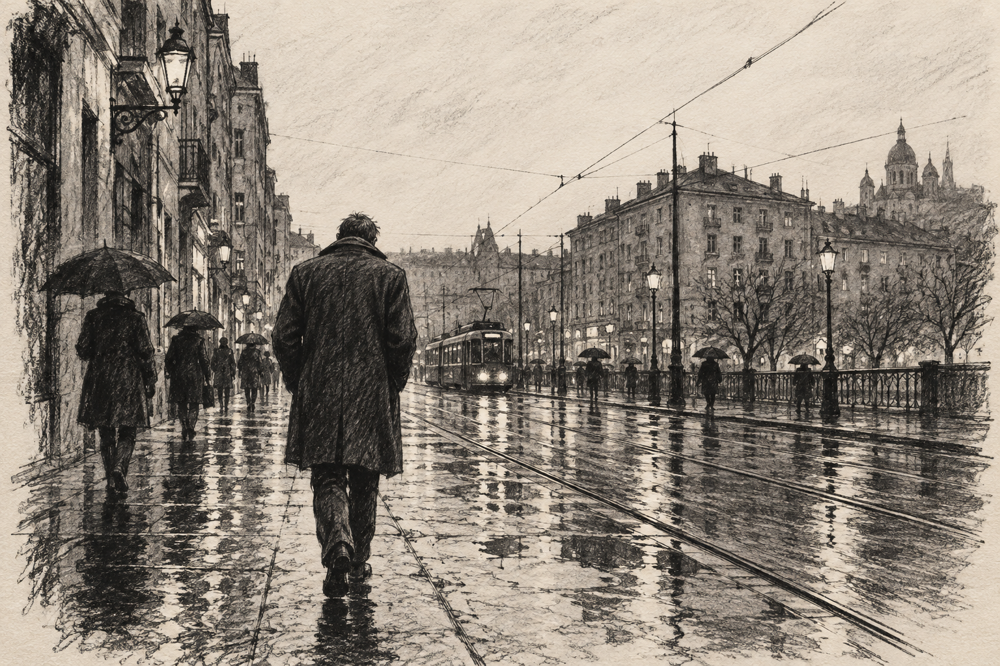
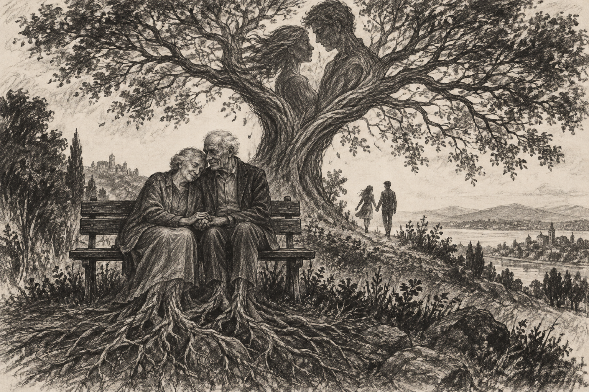
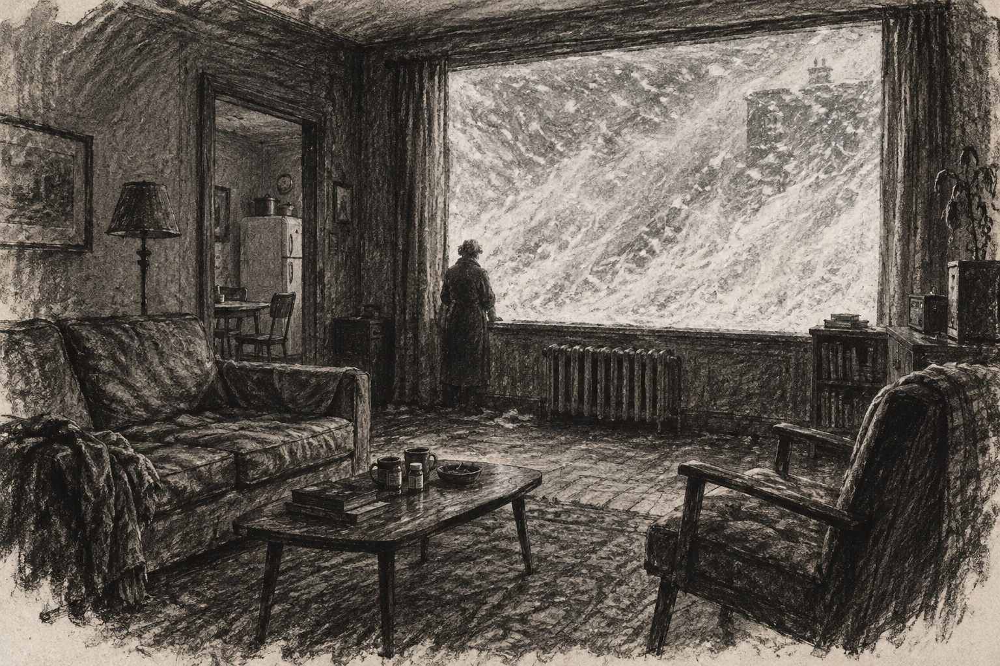

Friday

It was supposed to be summer. An endless November followed me home.
A woman sits a few metres away. I lower my eyes and return to my screen. Tomorrow.
Rain at the window. The room is cold. I keep wandering, without moving.
Since childhood, I have told myself stories to fall asleep. The princesses became real women.
She sees through my cheerful charade. A fleeting smile, and I belong somewhere.
Saturday
I hold the pillow like a lover. Her warmth lingers. Outside, only rain.
No messages. No food. Coffee and pills. Thirteen hours before bed again.
I tell myself this room is a choice. Style. Comfort. Splendid isolation.
Behind the glass, I watch people step into lives I never join.
I chose imaginary company. The price is loneliness. Then, suddenly, the sky clears.
“The usual?” A smile, a nod. Recognition is almost a conversation.
From terrace to terrace. Watching people. Burning quietly in the sun.
I could choose to call someone. But what if they don’t answer?

Her head rests on his shoulder. I imagine them taking root, keeping each other company across countless seasons.
The paths empty. The trees disappear into blackness.
A sudden accident. A lit phone on the asphalt. I wish I had more time.
For a second, I hope to meet a neighbour. The second passes.
My daily streak survives. I fall asleep with the phone on my chest.
Sunday

A blizzard covers the window. Outside, no one. The cold has become a world.
No food. No pills. No Internet. Dust settles over everything I called home.
Once, in a café, I asked to join her. She said yes. We spoke for an hour. Then she left.
Another table. Another life. Her eyes locked on mine, as though nothing else mattered.
Nothing left to carry me into tomorrow. Alone, with no one calling, I vanish.
Not even a shadow.
Later
The city is warm again. Lovers make their promises. Some will become trees.
The agent opens the door to a family. They love the couch, the windows, the old-fashioned charm.
The father takes his vitamins and smiles. He feels at home.